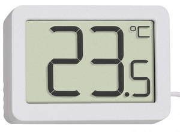

Fonctions du thermomètre
- acquérir la température d'une pièce intérieure
- afficher la température sur un afFicheur LCD
Objectif
- valider la résolution obtenue (calculée et simulée) par rapport à la précision du capteur.
Remarque : il faut que la résolution soit plus petite que la précision du capteur afin de bénéficier de cette précision.
Pour plus d'informations cliquer sur le lien suivant : Sensor Partners.
Cahier des charges
- résolution minimale attendue de la chaîne de mesure : 0,15°C
- plage de mesure : [0°C ; 100°C]
Moyens
- Isis : logiciel de saisie de schéma et de simulation
- Arduino : environnement de développement intégré
Compte-rendu
Vous répondrez aux questions Qx. sur un document numérique LibreOffice. À la fin du TD vous remettrez dans un dossier zippé nommé
digital_thermometer_votre_nom.ziples fichiers suivants :
├───CR-Ciel.odt
├───digital_thermometer.dsn
├───arduino_source
│ ├───arduino_source.ino
Modèle de compte-rendu : CR-Ciel.odt.
Auteur : Franck RIVIER - lycée Rouvière (TOULON)